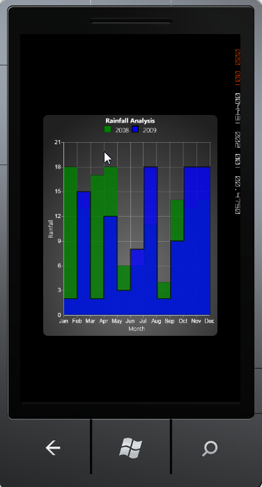

The Step Area chart is similar to the Area chart. Step Area charts use horizontal and vertical lines to connect data points resulting in a step like progression.
The following code example illustrates how to create a Step Area Chart.
|
[XAML]
<syncfusion:ChartSeries Type="StepArea" EnableEffects="True" Label="2008" Interior="Green" Stroke="Black" DataSource="{StaticResource rainfallData}" BindingPathX="Month" BindingPathsY="Value1"> </syncfusion:ChartSeries>
<syncfusion:ChartSeries Type="StepArea" EnableEffects="True" Label="2009" Interior="Blue" Stroke="Black" StrokeThickness="2" DataSource="{StaticResource rainfallData}" BindingPathX="Month" BindingPathsY="Value2"> </syncfusion:ChartSeries>
|

Figure 37 : Step Area Chart